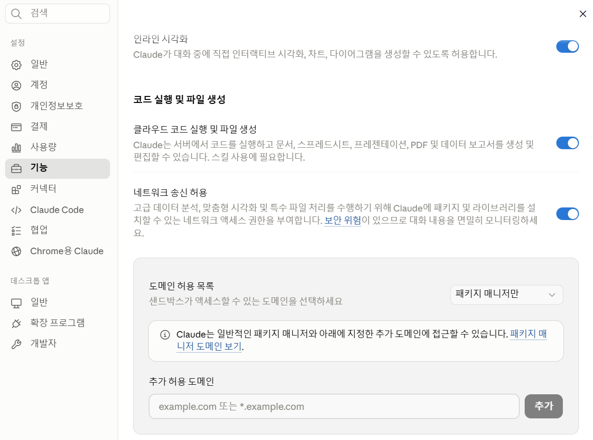

고등학교 교사를 위한
2일차 · 2차시 — 클로드 데스크탑 Skills + MS-Office 자동화
일정
3교시는 데스크탑 앱 시연부터 Skills 파일 생성 실습까지, 4교시는 MS Office 애드인 실습과 2일 과정 총정리로 마무리합니다.
강사 시연
앱을 열면 상단에 Chat / Claude Code / Cowork 세 탭이 보입니다. 오늘 핵심은 Cowork 탭입니다.
웹(claude.ai)과 똑같은 일반 대화 화면입니다. Projects·Memory 그대로 사용할 수 있습니다.
클로드가 여러 단계 작업을 스스로 계획·실행하는 에이전트 모드입니다. 실제 파일을 내 폴더에 직접 생성합니다.
터미널 기반 고급 코딩 도구입니다. 개발자용이라 오늘 수업에서는 사용하지 않습니다.
강의
오늘 배울 도구는 두 가지입니다. 둘 다 Claude를 쓰지만 사용 상황이 다릅니다. 이 차이를 먼저 알면 이후 실습이 훨씬 명확해집니다.
| 구분 | 🖥️ Skills (Cowork) | 📎 MS Office 애드인 |
|---|---|---|
| 실행 위치 | Claude 데스크탑 앱 Cowork 탭 | Excel · PPT 앱 안 사이드패널 |
| 주요 기능 | 새 파일 처음부터 생성 | 열린 파일 분석·수정·개선 |
| 파일 형식 | .docx · .xlsx · .pptx · .pdf · .hwpx | Excel(.xlsx) · PowerPoint(.pptx) |
| 설치 방법 | 설정 → 기능 → 코드 실행 ON | Excel/PPT → 추가기능 → Claude 검색 |

강사 시연
업무 유형에 맞는 Skill과 프롬프트를 확인하세요. 강사가 Word Skill을 데스크탑에서 직접 시연합니다. 나머지 3가지(Excel/PPT/PDF)는 아래 카드를 참고해 이후 실습에서 직접 해보세요. 대괄호 [ ] 부분만 바꾸면 어떤 상황에도 바로 재사용할 수 있습니다.
📋 프롬프트 템플릿
[행사명] 가정통신문을 Word 파일로 작성해 줘. 날짜: [발송 날짜] 대상: [학년] 학생 학부모 주요 내용: [안내할 내용 2~3줄] 형식: A4 1장 이내, 학교 로고 헤더 포함
✅ 채워진 예시
1학기 수학여행 가정통신문을 Word 파일로 작성해 줘. 날짜: 2026년 4월 20일 대상: 고등학교 1학년 학생 학부모 주요 내용: - 일정: 5월 15~16일(목~금) 강원도 1박 2일 - 참가비: 150,000원 (5월 2일까지 납부) - 동의서: 4월 30일까지 담임 제출 형식: A4 1장 이내, 학교 로고 헤더 포함
📋 프롬프트 템플릿
[학년] [반] 학생 [명수]명의 [학기] [시험명] 성적 관리표를 Excel로 만들어 줘. 과목: [과목1, 과목2, 과목3] 열 구성: 번호, 이름, 과목별 점수, 합계, 평균, 석차 조건부 서식: 90점 이상 초록, 60점 미만 빨간색
✅ 채워진 예시
고등학교 2학년 3반 학생 28명의 1학기 중간고사 성적 관리표를 Excel로 만들어 줘. 과목: 국어, 수학, 영어, 한국사, 통합과학 열 구성: 번호, 이름, 과목별 점수, 합계, 평균, 석차 조건부 서식: 90점 이상 초록, 60점 미만 빨간색 추가: 과목별 평균 행, 최고/최저 점수 표시
📋 프롬프트 템플릿
[단원명] 수업용 PPT를 만들어 줘. 대상: [학년] [교과] 슬라이드: [매수]장 포함 내용: - 핵심 개념 [개수]가지 (간략한 설명 포함) - 실생활 예시 1가지 - 형성평가 문제 [개수]개
✅ 채워진 예시
'문학의 갈래' 단원 수업용 PPT를 만들어 줘. 대상: 고등학교 1학년 국어 슬라이드: 8장 포함 내용: - 시·소설·수필·희곡 특징 각 1장씩 - 갈래별 비교표 1장 - 대표 작품 예시 1장 - 형성평가 2문제 1장 - 핵심 정리 1장
📋 프롬프트 템플릿
[문서명]을 PDF 파일로 작성해 줘. 주요 내용: - [항목 1] - [항목 2] - [항목 3] 형식: A4 [매수]장, 제목/학교명 포함
✅ 채워진 예시
1학기 기말고사 시험 일정 안내문을 PDF 파일로 작성해 줘. 주요 내용: - 시험 기간: 6월 23일(월) ~ 6월 27일(금) - 과목별 시험 일정표 (국어/수학/영어/사회/과학/한국사) - 준비물 안내 및 유의사항 - 문의: 교무실 031-000-0000 형식: A4 1장, 학교명 헤더 포함
선생님 실습
클로드 데스크탑 앱에서 Skills를 활용해 실제로 열고 바로 쓸 수 있는 교무 문서 파일을 생성합니다.
📋 실습 프롬프트 (복사 후 [ ] 교체)
[행사명] 가정통신문을 Word 파일로 작성해 줘. 날짜: [발송 날짜] 대상: [학년] 학생 학부모 주요 내용: - [안내 항목 1] - [안내 항목 2] - [안내 항목 3] 형식: A4 1장 이내, 학교명 헤더 포함
✅ 채워진 예시 (그대로 붙여넣어 체험)
1학기 체육대회 가정통신문을 Word 파일로 작성해 줘. 날짜: 2026년 5월 12일 대상: 고등학교 2학년 학생 학부모 주요 내용: - 일시: 5월 22일(금) 오전 9시 ~ 오후 2시 - 준비물: 체육복, 운동화, 개인 물통 - 응원 참관: 학부모 자유 참석 가능 (외부석 별도 안내) 형식: A4 1장 이내, 학교명 헤더 포함
선생님 실습
HWPX 스킬을 설치하면 Claude가 보고서·행사계획서 등 한글 공문서를 직접 생성해 줍니다. 아래 실습 페이지에서 샘플 양식을 열고 직접 체험해 보세요.
강사 시연
Excel과 PowerPoint 안에서 Claude를 직접 설치하면 현재 파일의 내용을 자동으로 인식해 분석·수정·생성이 가능합니다.
선생님 실습
PPT 파일을 열어 두고 Claude에 지시하면 슬라이드 내용을 자동으로 생성하거나 개선 제안을 받을 수 있습니다.
현재 PPT 파일의 [3번] 슬라이드를 분석해서: 1. 핵심 내용을 3줄로 요약해 줘. 2. 학생이 더 이해하기 쉬운 표현으로 바꿔 줘. 3. 제목을 더 임팩트 있게 수정해 줘. 4. 내용을 시각적으로 표현할 도식 구성을 제안해 줘.
다음 내용으로 수업용 PPT 슬라이드를 만들어 줘. - 주제: [단원명] 핵심 개념 정리 - 학년: [학년] - 포함 내용: · 핵심 개념 3가지 (간략한 설명 포함) · 실생활 예시 1가지 · 형성평가 문제 1개 각 항목을 구분된 슬라이드 구성으로 제안해 줘.
선생님 실습
Excel에 Claude를 연결하면 성적 분석, 출결 현황 정리, 통계 생성을 자연어 지시만으로 처리할 수 있습니다.
현재 시트의 학생 성적 데이터를 분석해 줘. 1. 과목별 평균과 표준편차를 계산해 줘. 2. 성적 구간별(90점 이상 / 80~89 / 70~79 / 70점 미만) 학생 수를 정리해 줘. 3. 평균 이하 학생 목록을 별도 시트에 정리해 줘. 4. 결과를 보기 좋은 표 형식으로 정리해 줘.
현재 시트의 출결 데이터를 분석해 줘. 1. 학생별 결석·지각·조퇴 횟수를 집계해 줘. 2. 출석률이 90% 미만인 학생 목록을 별도로 추출해 줘. 3. 월별 출결 현황 요약표를 만들어 줘. 4. 생활기록부 기재에 필요한 형식으로 정리해 줘.
2일차 마무리 & 2일 과정 총정리
2일 동안 배운 내용을 조합하면 업무 시간이 크게 줄어듭니다.